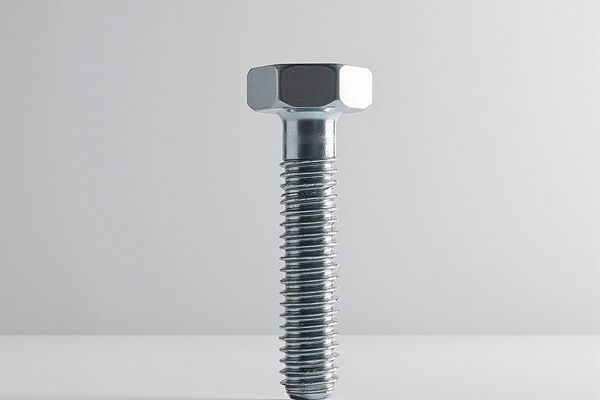
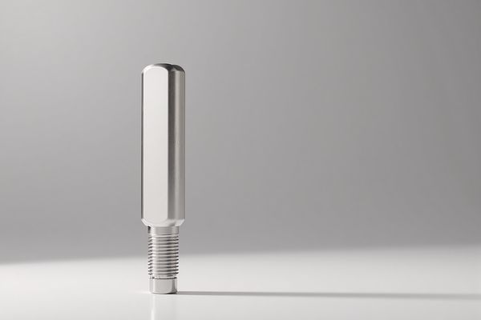
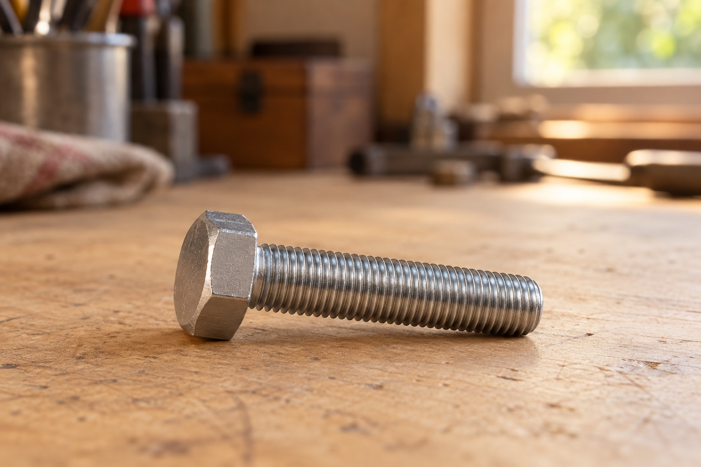

GB/T 5782

DIN 931 / ISO 4014
DIN 933 / ISO 4017

ISO 4014
可指定头型、槽型、螺纹、材质和表面处理；报价前审核图纸及制造要求。
面向 OEM 装配线及持续生产订单；请提供单批数量、年度需求、检验要求及分批交付计划。
起订数量、样品安排、检验及交期按项目协商确认。
符合 DIN 931（ISO 4014）的半螺纹六角螺栓，是国际上广泛采用的螺栓标准。

符合 DIN 933（ISO 4017）的全螺纹六角螺栓，适用于贯穿连接。
符合 ISO 4014 国际标准的半螺纹六角螺栓，对应 DIN 931。
询价前比较涂覆工艺、螺纹配合与氢脆相关要求。
读懂螺栓强度标记，比较公称值，并编制涵盖完整连接的采购要求。
准备图纸、验收要求和交付信息，帮助快速审核非标紧固件询价。
获取报价
所填参数将自动带入询价表单。